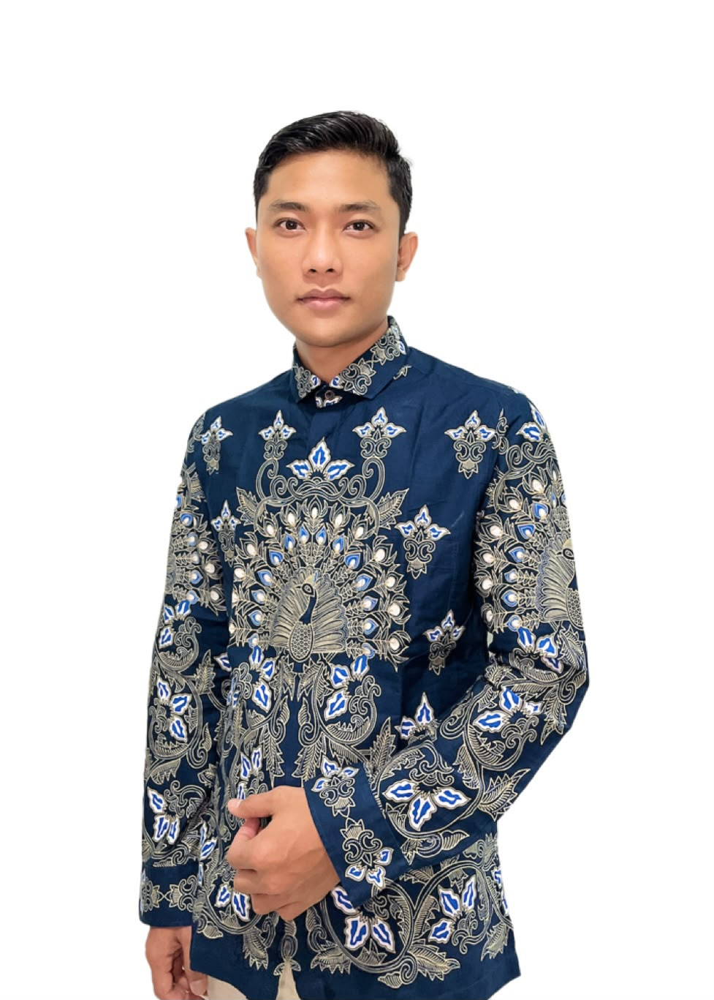

IT Infrastructure & Technical Support Specialist
IT Infrastructure & Technical Support Specialist
I am an IT Infrastructure & Technical Support Specialist with experience in Microsoft 365 Administration, Microsoft Entra ID, Networking, IT Asset Management, Hardware & Software Troubleshooting, and End-User Support. I have experience supporting operations at the headquarters and branch offices, with a focus on user productivity, infrastructure stability, and improving IT services.
Microsoft 365 & Exchange Online
Microsoft Entra ID
Networking & VPN
IT Support & Troubleshooting
Asset Management
Supporting the migration of Active Directory to Microsoft Entra ID to enhance security and identity management.
Deployment and replacement of hundreds of computer devices to support user productivity.
Upgrades to network and LAN infrastructure, including troubleshooting and performance optimization.
Standardizing IT devices and managing the asset lifecycle of the company.
IT Technical Support Staff (2025 - Present)
IT Support (2019 - 2025)
📱: +62 852-8888-5339
💼 LinkedIn: linkedin.com/in/akhmad-yunus-subkhi-b83664176
🐙 GitHub: github.com/AkhmadYunus